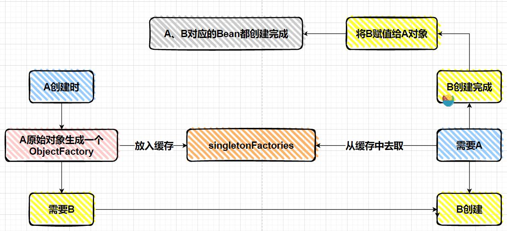

Spring依赖注入的循环依赖
循环依赖简介
A对象创建时依赖了B对象，B对象创建时依赖了A对象，如下举例：
1 | public class A { |
在 Spring 中，一个对象并不是简单 new 出来了，而是会经过一系列的 Bean 的生命周期，因为 Bean 的生命周期才会出现循环依赖问题。
结合依赖注入的Bean 生成步骤
被 Spring 管理的对象叫做 Bean 。Bean的生成步骤如下：
- Spring 扫描 class 得到 BeanDefinition；
- 根据得到的 BeanDefinition 去生成 bean；
- 首先根据 class 推断构造方法；
- 根据推断出来的构造方法，反射，得到一个对象（暂时叫做原始对象）；
- 填充原始对象中的属性（依赖注入）；
- 如果原始对象中的某个方法被 AOP 了，那么则需要根据原始对象生成一个代理对象；
- 把最终生成的代理对象放入单例池（源码中叫做 singletonObjects）中，下次 getBean 时就直接从单例池拿即可；
上面例子中的依赖注入过程中A 类存在一个 B 类的 b 属性，所以，当 A 类生成了一个原始对象之后，就会去给 b 属性去赋值，此时就会根据 b 属性的类型和属性名去 BeanFactory 中去获取 B 类所对应的单例bean。
- 如果此时 BeanFactory 中存在 B 对应的 Bean，那么直接拿来赋值给 b 属性；
- 如果此时 BeanFactory 中不存在 B 对应的 Bean，则需要生成一个 B 对应的 Bean，然后赋值给 b属性。
但是如果此时 B 类在 BeanFactory 中还没有生成对应的 Bean，那么就需要去生成，就会经过 B 的 Bean 的生命周期。那么在创建 B 类的 Bean 的过程中，如果 B 类中存在一个 A 类的 a 属性，那么在创建 B 的 Bean 的过程中就需要 A 类对应的 Bean，但是，触发 B 类 Bean 的创建的条件是 A 类 Bean 在创建过程中的依赖注入，所以这里就出现了循环依赖：
从而导致 A Bean 创建不出来，B Bean 也创建不出来。
三级缓存解决部分循环依赖问题
在 Spring 中，通过三级缓存机制帮开发者解决了部分循环依赖的问题。
- 一级缓存为：singletonObjects；
- 二级缓存为：earlySingletonObjects；
- 三级缓存为：singletonFactories；
1 | /** Cache of singleton objects: bean name –> bean instance */ |
「singletonObjects」中缓存的是已经经历了完整生命周期的bean对象。
「earlySingletonObjects」比 singletonObjects 多了一个 early ，表示缓存的是早期的 bean对象。早期指的是 Bean 的生命周期还没走完就把这个 Bean 放入了 earlySingletonObjects。
「singletonFactories」中缓存的是 ObjectFactory，表示对象工厂，用来创建某个对象的。
解决循环依赖问题原理：
A 的 Bean 在创建过程中，在进行依赖注入之前，先把 A 的原始 Bean 放入缓存（提早暴露，只要放到缓存了，其他 Bean 需要时就可以从缓存中拿了），放入缓存后，再进行依赖注入，此时 A 的Bean 依赖了 B 的 Bean 。
如果 B 的 Bean 不存在，则需要创建 B 的 Bean，而创建 B 的 Bean 的过程和 A 一样，也是先创建一个 B 的原始对象，然后把 B 的原始对象提早暴露出来放入缓存中，然后在对 B 的原始对象进行依赖注入 A，此时能从缓存中拿到 A 的原始对象（虽然是 A 的原始对象，还不是最终的 Bean），B 的原始对象依赖注入完了之后，B 的生命周期结束，那么 A 的生命周期也能结束。
因为整个过程中，都只有一个 A 原始对象，所以对于 B 而言，就算在属性注入时，注入的是 A 原始对
象，也没有关系，因为A 原始对象在后续的生命周期中在堆中没有发生变化。
带有AOP的循环依赖问题：
如果 A 的原始对象注入给 B 的属性之后，A 的原始对象进行了 AOP 产生了一个代理对象，此时就会出现，对于 A 而言，它的 Bean 对象其实应该是 AOP 之后的代理对象，而 B 的 a 属性对应的并不是 AOP 之后的代理对象，这就产生了冲突。
B 依赖的 A 和最终的 A 不是同一个对象。
在一个 Bean 的生命周期最后，Spring提供了 BeanPostProcessor 可以去对 Bean 进行加工，这个加工不仅仅只是能修改 Bean 的属性值，也可以替换掉当前 Bean 。
在BeanPostProcessor 中可以完全替换掉某个 beanName 对应的 bean 对象。
而 BeanPostProcessor 的执行在 Bean 的生命周期中是处于属性注入之后的，循环依赖是发生在属性注入过程中的，所以很有可能导致，注入给 B 对象的 A 对象和经历过完整生命周期之后的 A 对象，不是一个对象。这就是有问题的。
AOP Bean注入原理：
AOP 就是通过一个 BeanPostProcessor 来实现的，在 Spring 中 AOP 利用的要么是 JDK 动态代理，要么 CGLib 的动态代理，所以如果给一个类中的某个方法设置了切面，那么这个类最终就需要生成一个代理对象。
一般过程就是：A 类—>生成一个普通对象–>属性注入–>基于切面生成一个代理对象–>把代理对象
放入 singletonObjects 单例池中。
所以在这种情况下的循环依赖，Spring 是解决不了循环依赖问题的，因为在属性注入时，Spring 也不知道 A 对象后续会经过哪些 BeanPostProcessor 以及会对 A 对象做什么处理。
如何解决AOP下的循环依赖问题：
首先，singletonFactories 中存的是某个 beanName 对应的 ObjectFactory，在 bean 的生命周期中，生成完原始对象之后，就会构造一个 ObjectFactory 存入 singletonFactories 中。

这个 ObjectFactory 是一个函数式接口，支持Lambda表达式：() ->getEarlyBeanReference(beanName, mbd, bean)
上面的Lambda表达式就是一个ObjectFactory，执行该Lambda表达式就会去执行getEarlyBeanReference方法.
图中的 ObjectFactory 就是上文说的 labmda 表达式，中间有 getEarlyBeanReference 方法。
注意存入 singletonFactories 时并不会执行 lambda 表达式，也就是不会执行getEarlyBeanReference 方法。
从 singletonFactories 根据 beanName 得到一个 ObjectFactory ，然后执行 ObjectFactory ，也就是执行 getEarlyBeanReference 方法，此时会得到一个 A 原始对象经过 AOP 之后的代理对象，然后把该代理对象放入 earlySingletonObjects 中。
此时并没有把代理对象放入 singletonObjects 中，那什么时候放入到 singletonObjects 中呢？
此时，我们只得到了 A 原始对象的代理对象，这个对象还不完整，因为 A 原始对象还没有进行属性填充，所以此时不能直接把A的代理对象放入 singletonObjects 中，所以只能把代理对象放入earlySingletonObjects 。
假设现在有其他对象依赖了 A，那么则可以从 earlySingletonObjects 中得到 A 原始对象的代理对象了，并且是A的同一个代理对象。
当 B 创建完了之后，A 继续进行生命周期，而 A 在完成属性注入后，会按照它本身的逻辑去进行AOP，而此时我们知道 A 原始对象已经经历过了 AOP ，所以对于 A 本身而言，不会再去进行 AOP了，那么怎么判断一个对象是否经历过了 AOP 呢？
会利用上文提到的 earlyProxyReferences，在 AbstractAutoProxyCreator 的 postProcessAfterInitialization 方法中，会去判断当前 beanName 是否
在 earlyProxyReferences，如果在则表示已经提前进行过 AOP了，无需再次进行 AOP。
对于 A 而言，进行了 AOP 的判断后，以及 BeanPostProcessor 的执行之后，就需要把 A 对应的对象放入 singletonObjects 中了，但是我们知道，应该是要 A 的代理对象放入 singletonObjects 中，所以此时需要从 earlySingletonObjects 中得到代理对象，然后入 singletonObjects 中。
至此，整个循环依赖解决完毕。
总结一下三级缓存：
- 「singletonObjects」：缓存某个 beanName 对应的经过了完整生命周期的bean；
- 「earlySingletonObjects」：缓存提前拿原始对象进行了 AOP 之后得到的代理对象，原始对象还没有进行属性注入和后续的 BeanPostProcessor后置处理器增强器等生命周期；
- 「singletonFactories」：缓存的是一个 ObjectFactory ，主要用来去生成原始对象进行了 AOP之后得到的「代理对象」，在每个 Bean 的生成过程中，都会提前暴露一个工厂，这个工厂可能用到，也可能用不到，如果没有出现循环依赖依赖本 bean，那么这个工厂无用，本 bean 按照自己的生命周期执行，执行完后直接把本 bean 放入 singletonObjects 中即可，如果出现了循环依赖依赖了本 bean，则另外那个 bean 执行 ObjectFactory 提交得到一个 AOP 之后的代理对象（如果有 AOP 的话，如果无需 AOP ，则直接得到一个原始对象）。